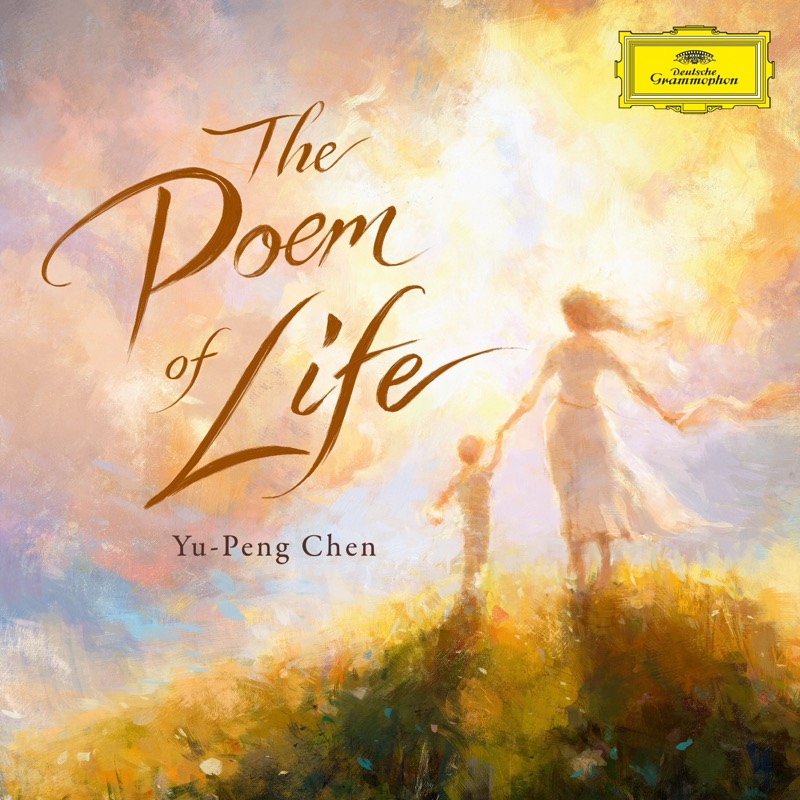

The Poem of Life
生命之诗
Shanghai Philharmonic Orchestra · Liang Zhang, conductor
陈致逸为 Deutsche Grammophon 录制的第一张原创古典专辑：一部为钢琴与管弦乐团写的十二乐章交响组曲，从出生、童年、青春、爱情、成长，一直写到失去、告别和接受。第十乐章 Where Longing Ends 拆成两轨，所以是 13 首。编制里有古筝、二胡、琵琶、笙，还有 Daniel Hope（小提琴）、Avi Avital（曼陀林）、Philipp Schupelius（大提琴）几位客座独奏。
Tracks
- 01Overture - The Flavors of Life5:31
故事还没开始，先把人生的各种味道摊开给你看。Daniel Hope 的小提琴和 Avi Avital 的曼陀林都在这里出场。
- 02First Breath5:09
第一口呼吸。听那种慢慢展开、世界一点点变大的感觉。
- 03Waltz of the Fireflies4:35
萤火虫圆舞曲。不用分析节拍，听它的轻盈和闪烁就够了。
- 04The Wind Chaser3:56
追风者。少年开始向外跑，还不知道要去哪里，但已经有了速度。
- 05Love in First Bloom9:21
我听到的是一股生长开来的力量。它不是“甜”，是“长出来”：生命第一次确认自己可以去爱、去靠近、去承担。前半张的情绪中心。
- 06A Journey Forged Through Fire5:24
抗争、用力，但没有坠入黑暗。这不是受难，是淬炼，像锻造金属的火：受阻、蓄力、再向前。生命一直站着。
- 07Under the Moonlight5:46
向外用力之后，音乐第一次重新转向内。留意这个转折是在哪一刻发生的。
- 08Unspoken2:37
无法言说，但内心有回应。一旦说出口就回不去了，所以宁愿停在此刻。“我们都知道，但暂时不要定义它。”
- 09Wordless Farewell3:35
这是告别前一瞬间的悬停。话太多，所以最后不用语言告别。珍惜，却不一定占有；回应，却不一定说破。
- 10Where Longing Ends (Pt. 1)4:29
又明亮起来，慢慢落地，一扇通往新世界的窗透出光。过去还在身后，但已经不再挡住前面的光。
- 11Where Longing Ends (Pt. 2)1:58
男女声的咏唱：女高音 Lee Yee，男中音 Zhengzhong Zhou。两个人都在发声，却不再需要用日常语言解释彼此。思念到这里不再需要一个结果。
- 12The Unfinished Poem3:44
结尾又抬起头来抗争，对“被结束、被定义”说不。我接受它没有结局，但没有因此失去生命力。
- 13Life, Like a Dream4:13
镜头拉远。已经用力过了，所以终于可以不用再用力。
Credits
- Daniel Hope — violin (1, 6, 7, 9)
- Avi Avital — mandolin (1)
- Philipp Schupelius — cello (7, 9, 10, 11)
- Yixuan Wei (6)
- Lee Yee — soprano · Zhengzhong Zhou — baritone (10, 11)
- Yu-Peng Chen — piano
Notes
陈致逸与《原神》
陈致逸 1984 年生于湖南，学过单簧管和钢琴，读过深圳艺术学校，之后在上海音乐学院从器乐转向作曲。毕业后长期做广告、影视和游戏音乐，2009 年成立音序文化，2019 年起在 HOYO-MiX 为《原神》作曲。他在采访里说 “games taught me how to tell a story”。所以听到原神的影子是有根据的，只是相似之处不在某段旋律，在叙事方法：场景、人物、冲突、停顿、再出发。这张专辑是他第一次从给虚构世界配乐，转向给人的一生配乐。
疫情、AI 与这个时代
陈致逸本人没有说过这张专辑在写疫情、AI 或经济变化，他的公开说法一直是生命、记忆、第一次、失去、接受。但 2026 年的听众很容易从 Unspoken 到 Life, Like a Dream 这一段听出一种共同经验：有些旧世界没有正式宣布结束，我们却已经回不去了。Where Longing Ends 之后的亮光也不是恢复原状，前方已经是另一个世界。
和 re:member 的关系
目前找不到直接的影响关系，但两张专辑在精神结构上是相通的。Ólafur Arnalds 的 re:member（2018）讲的是重新成为完整的自己，用的是钢琴、Stratus 系统、电子和弦乐，氛围私密，时间感是碎片和循环。The Poem of Life 讲的是怎样走过一生，用钢琴、大型管弦乐和中国传统乐器，空间开阔，是一段完整的人生旅程。两者都属于同一条当代古典的脉络：先给听众一个可以走进去的精神空间，形式留到后面再理解。